Course Objectives: To get a basic understing of geographic principles allowing you to use GIS software to manipulate, transform and style data to make maps that displays data with integretiy and helps answer questions.
Schedule
Geography + GIS Basics
QGIS Bascis
Geospatial Analysis Basics
Expectations
Listen!...if you aren't listening then why are you here?
Participate...you will learn more that way
Ask questions when you are stuck
Be nice! We have a lot of different background and skills at this training
What are Maps?
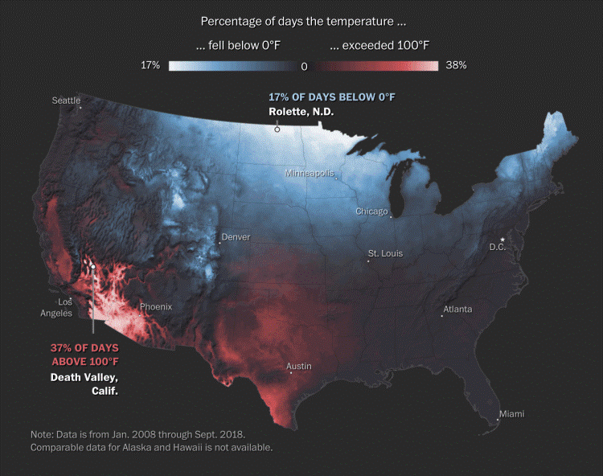
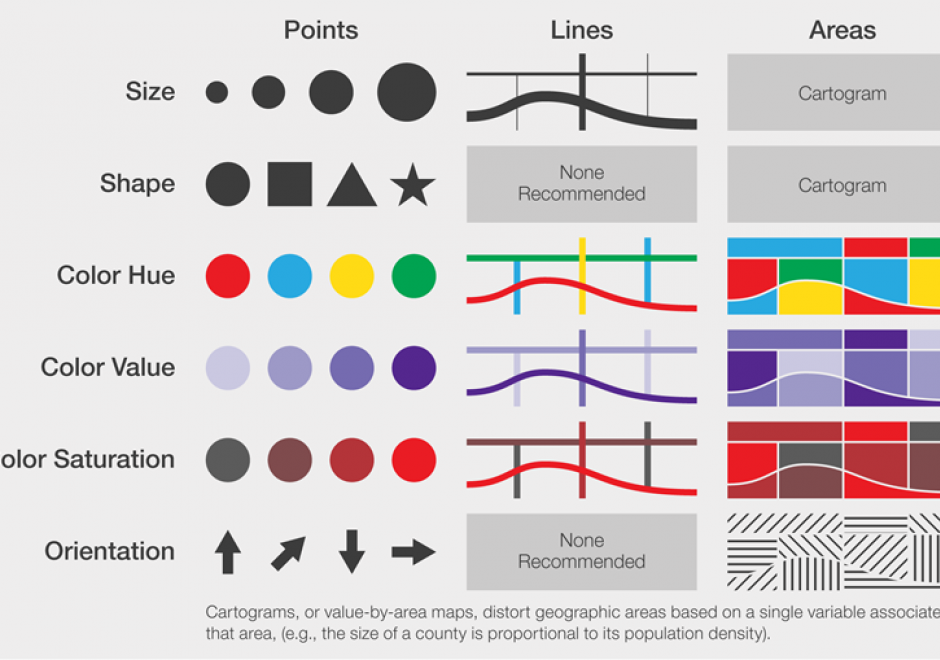
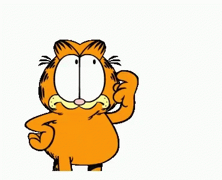
Why Maps?
They look cool!
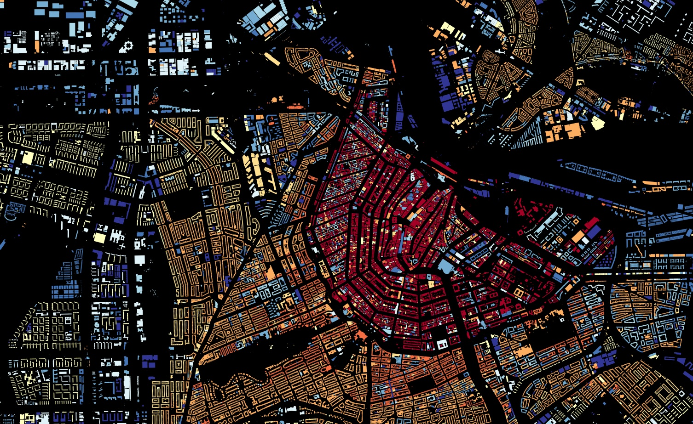
They are informative
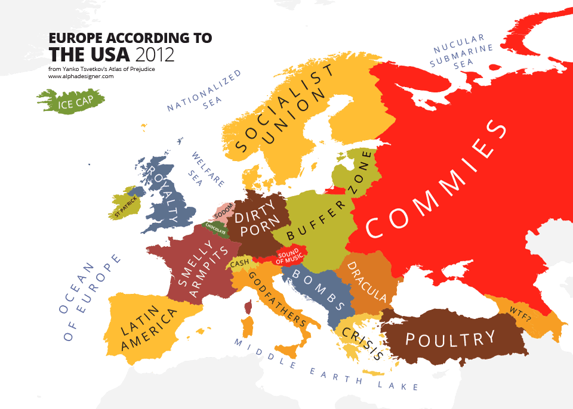
They are useful tools
But hasn't the entire world been explored and mapped?
No!!! Our planet is dynamic and ever changing.
Humans and natural forces continue to shape & change the earth, and better technology let us map it more accurately.
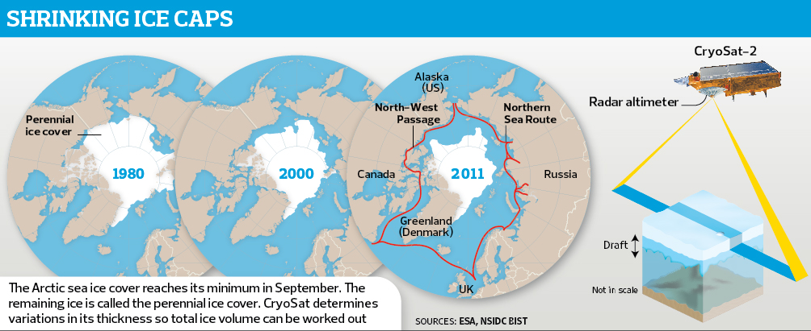
Geography Basics
Maps are representations of the real world. This includes things that can be seen as well as representations of things that cannot.
The world is shaped as a(n): _______.
The world is shaped as a(n): ellipsoid.
Hard to put a 3D object (like an ellipsoid) on a 2D plane.
You have to rip, strech, or perform another distortions
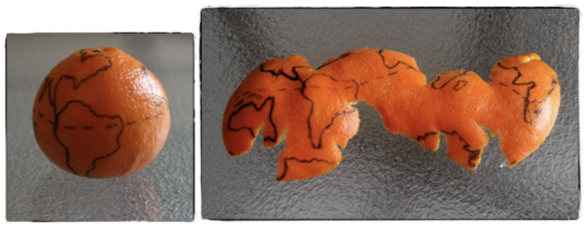
Coordinates are the x,y values given to a particular location on a map. These are called longitude and latitude.
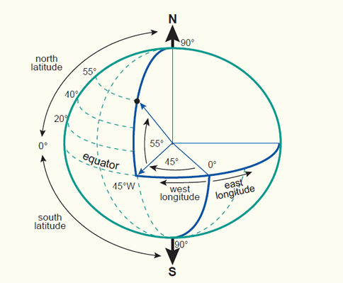
Geocoding is when you take text data like "Sierra Leone" and associate points with it. This is what google maps or OpenStreetMaps does when you search for a location
Reverse Geocoding Is when you take a longitude and a latitude and return a text value like "Sierra Leone"
Everything is related to everything else but near things are more related than distant things.
-Waldo Tobler
GIS Basics
Geographic phenomena on our map can be discrete or continuous.
Continuous types changes gradually, not abruptly ex: temperature, elevation, salinity.
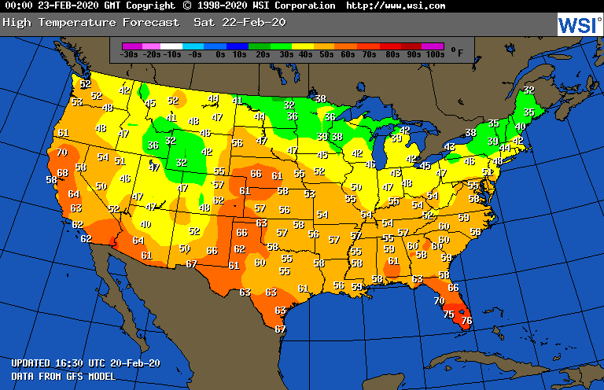
Discrete types are divided into mutually exclusive parts, with all locations in one part having the same value.
Different types of data can be used to represent our geographic phenomenon.
But you have to make sure that the right data is used to represent the right type of phenomenon!!!
Nominal Data provides an identifier to discriminate between values.
Ordinal Data can be put in some natural sequence.
Interval Data allows for simple forms of computation like + and -.
Ratio Data allows for most, if not all, arithmetic computations.
GIS File Types
Map data is stored as a Vector or a Raster.
A raster is a set of regularly spaced cells with associated values.
The value of the cell is assumed to be valid for all the area within it.
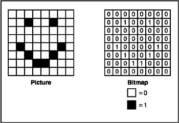
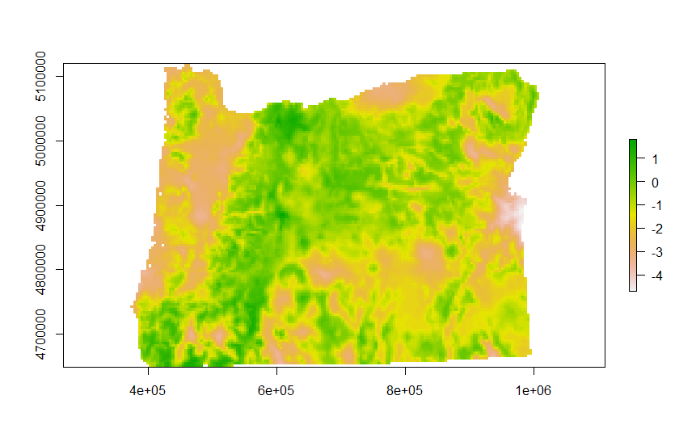
Vectors, unlike rasters, attempt to explicitly georeference the geographic phenomena.
They can be a single point (x, y)or(x, y, z).
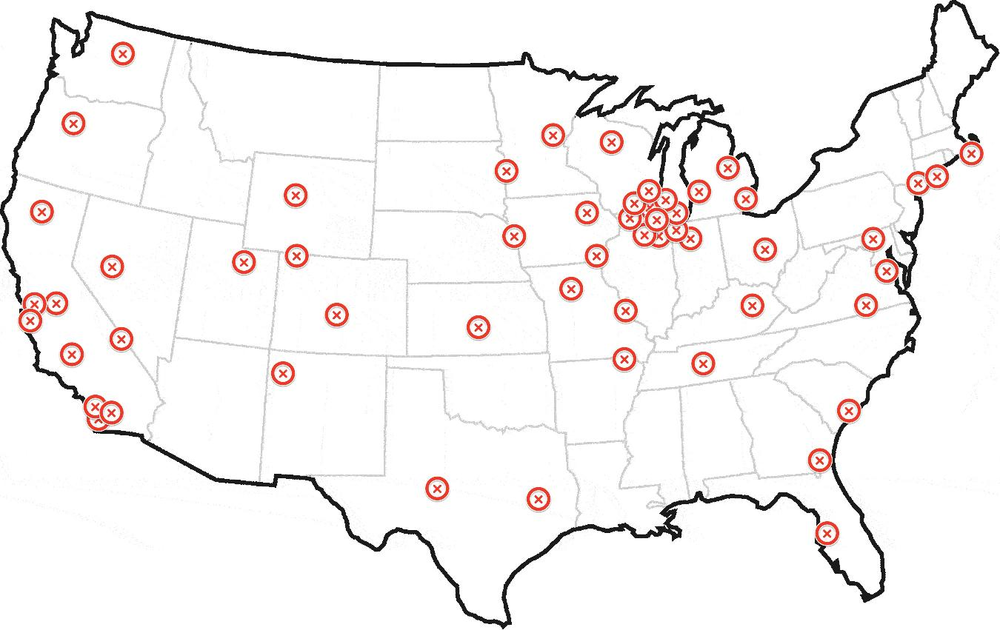
They can be a line. Which requires two or more nodes and a line drawn between them.
Another type of vectors are polygons. They are a collection of nodes and arcs.
Each section of vector data can have thematic data associated with it.
Now we have some basic GIS principles down...lets get mapping!!! Over to you Christine!
Exporting Data from OSM
Over the years there has been a lot of different tools and websites developed for extracting data from OSM. Today I will show you three of my favorite.